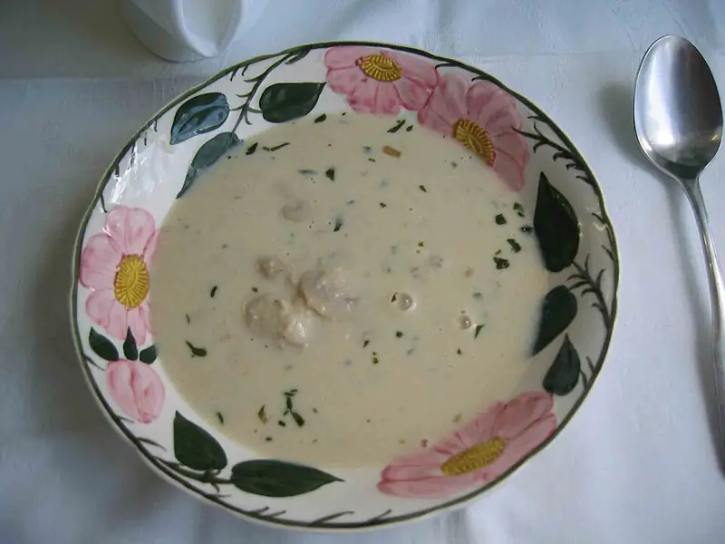

Фото: Redeemer|Vodesnet, CC BY-SA 3.0

Грибной суп
Постный суп из лесных грибов с картошкой на воде
50 мин5 порц.163 ккал на порциюБ 5 · Ж 7 · У 21Русская кухня
Продукты на 5 порц.
- Лесные грибы (замороженные)400 г
- Вода2 л
- Картофель4 шт
- Морковь1 шт
- Лук репчатый1 шт
- Растительное масло2 ст. л.
- Лавровый лист2 шт
- Соль2 ч. л.
- Перец чёрный молотый1 щеп.
- Укроп по желаниюпо вкусу
Как готовить
- Грибы разморозьте и крупные нарежьте. Залейте водой, доведите до кипения на сильном огне, снимите пену и варите 15 минут на среднем огне.
- Добавьте картофель кубиками, посолите и варите 10 минут.
- Лук нарежьте мелко, морковь натрите. Обжарьте на масле на среднем огне 5-7 минут до золотистого цвета.
- Переложите зажарку в суп, добавьте лавровый лист и перец.
- Варите 5 минут, пока картофель не станет мягким.
- Выключите огонь, добавьте укроп и дайте постоять 10 минут.
Совет. Шампиньоны тоже подойдут, но их сначала обжарьте вместе с луком 10 минут, иначе вкус будет пресным.